01Objectif
Étape en option : faire tourner des services dans Docker sur la tour, proprement et sans affaiblir la sécurité du labo.
- Uptime Kuma : un tableau de bord qui surveille le labo (Ollama, SSH, la Freebox, l'accès à internet) et deux sites, avec une alerte sur Discord ;
- Traefik, un reverse proxy : ouvrir Kuma à l'adresse https://kuma.labo.forestmaxime-pf.fr, avec un vrai certificat Let's Encrypt (cadenas normal dans le navigateur), alors que la tour n'est pas joignable depuis internet.
La règle du projet ne change pas : rien d'ouvert sur internet en dehors du VPN de la Freebox.
02Schéma et technologies
Portable (réseau local) ─┐
├─ https://kuma.labo.forestmaxime-pf.fr
iPhone en 4G + VPN ──────┘ │ (le DNS public répond 192.168.1.49 :
(WireGuard de la Freebox) │ une adresse privée, injoignable sans VPN)
▼
Tour « labo » ┌───────────────────────────────────────────────────────────────┐
│ ufw : 443 seulement depuis 192.168.1.0/24 et le VPN │
│ │
│ Traefik v3.7.16 (Docker, réseau de la tour) │
│ :443, utilisateur 10002, aucun droit système │
│ certificat *.labo.forestmaxime-pf.fr ◄── Let's Encrypt │
│ │ (preuve par un TXT posé │
│ ▼ chez Cloudflare avec le jeton)│
│ Uptime Kuma 2.5.8 (Docker) sur 127.0.0.1:3001 │
│ utilisateur 10001, 7 sondes ── alertes ──► Discord #labo │
└───────────────────────────────────────────────────────────────┘| Rôle | Technologie |
|---|---|
| Conteneurs | Docker Engine et docker compose, un dossier par service dans services/ (dans Git) |
| Tableau de bord | Uptime Kuma 2.5.8, image slim-rootless, base SQLite |
| Reverse proxy | Traefik v3.7.16 (image officielle) |
| Certificat | Let's Encrypt, défi DNS-01 par l'API de Cloudflare (aucun port à ouvrir pour l'obtenir) |
| Nom | kuma.labo.forestmaxime-pf.fr, enregistrement A « DNS only » vers 192.168.1.49 |
| Pare-feu | ufw (le port 443 n'est ouvert qu'au réseau local et au VPN) |
| Alertes | webhook Discord, salon #labo (séparé de la surveillance des clients) |
03Uptime Kuma
Fichier : services/uptime-kuma/compose.yaml.
- Version fixée (2.5.8-slim-rootless) : je la change à la main, après lecture des notes de version, chaque fin de mois.
- Réseau de la tour (network_mode: host) et UPTIME_KUMA_HOST=127.0.0.1 : Docker ne publie aucun port. C'est important, car les ports publiés par Docker passent par-dessus ufw. Kuma voit aussi Ollama, qui n'écoute que sur 127.0.0.1.
- Utilisateur 10001, qui n'existe pas sur la tour. L'image utilisait l'UID 1000, le même que mon compte : la relecture l'a repéré, je l'ai changé.
- Aucun droit système (cap_drop: ALL), sauf NET_RAW pour la sonde ping de la Freebox.
- Données hors Git : la base de Kuma contient le webhook Discord. Pas de sauvegarde automatique (7 sondes à recréer à la main si besoin, liste ci-dessous) : la copie contiendrait ce webhook.
Les 7 sondes (toutes les 60 s, « Tentatives : 1 », donc une alerte après 2 échecs de suite) :
| Sonde | Type | Cible |
|---|---|---|
| Ollama | HTTP, mot-clé Ollama is running | http://127.0.0.1:11434 |
| SSH de la tour | TCP | 127.0.0.1:22 |
| Freebox | ping | 192.168.1.254 |
| Accès à internet | DNS | cloudflare.com par 1.1.1.1 |
| Site de Poche | HTTP, expiration du certificat et du nom de domaine | (mon site professionnel) |
| Site du client | HTTP, expiration du certificat et du nom de domaine | (le site de mon client) |
| Traefik (certificat du labo) | HTTP, expiration du certificat | https://kuma.labo.forestmaxime-pf.fr |
04Traefik et le certificat par le DNS de Cloudflare
Fichiers : services/traefik/compose.yaml, traefik.yml (démarrage), dynamique.yml (routes), 60-port-443-non-root.conf (réglage système).
Pourquoi le défi DNS ?
Pour donner un certificat, Let's Encrypt doit vérifier que je contrôle le nom. La méthode habituelle (HTTP) l'oblige à joindre la tour depuis internet : impossible ici, et c'est voulu. Avec le défi DNS, Traefik pose un enregistrement TXT dans le DNS de Cloudflare grâce à un jeton, Let's Encrypt le lit, et c'est tout. La tour n'a besoin que de sortir sur internet.
Mes choix
| Choix | Pourquoi |
|---|---|
| Traefik plutôt que Caddy | L'image officielle sait déjà parler à Cloudflare. Caddy demande de construire sa propre image, à refaire à chaque mise à jour. |
| Le domaine du portfolio (forestmaxime-pf.fr), pas sitedepoche.fr | Le jeton reste sur la tour. S'il fuyait, il ne pourrait pas toucher au site ni aux e-mails de mon entreprise. Ce domaine n'a pas d'e-mails (v=spf1 -all, pas de MX). En revanche, il pourrait toucher à ce portfolio (voir partie 7). |
| Jeton limité | Droits « DNS : Edit » et « Zone : Read » sur cette seule zone, utilisable seulement depuis mon adresse (IPv4 et préfixe IPv6, car la tour joint Cloudflare en IPv6), expire le 30/10/2027 (Fig. 13 et 14). |
| Un seul certificat *.labo.forestmaxime-pf.fr | Les certificats sont publiés dans des journaux publics (Certificate Transparency). Avec un certificat « joker », ces journaux ne listent pas mes services. Chaque service a quand même son propre nom dans le DNS public (kuma.labo, Fig. 15). |
| Pas de Cloudflare Tunnel | Il aurait ouvert un accès par internet. Le VPN suffit. |
| Pas de tableau de bord Traefik ni d'accès au socket Docker | Moins de choses à protéger. Le socket Docker équivaut à un accès root. |
Durcissement
Conteneur : utilisateur 10002, aucun droit système (cap_drop: ALL), no-new-privileges, système de fichiers en lecture seule, version fixée. TLS : version 1.2 au minimum, et sniStrict (une connexion par l'adresse IP, ou avec un nom que le certificat ne couvre pas, est refusée ; un nom inconnu en *.labo reçoit une page 404). En-têtes ajoutés : HSTS, X-Content-Type-Options, Referrer-Policy, X-Frame-Options.
Le jeton
Le jeton en service n'a jamais été écrit dans Git ni affiché à l'écran (un premier jeton, lui, a été vu : voir partie 6) : il est collé dans read -rs (rien ne s'affiche, rien dans l'historique) puis écrit dans services/traefik/secrets/ (fichier lisible par l'utilisateur 10002 seulement, ignoré par Git). Traefik le lit par CF_DNS_API_TOKEN_FILE. Les certificats et leur clé privée (acme/) sont aussi hors Git.
Essai d'abord sur le serveur de test de Let's Encrypt (certificat non reconnu, mais sans limite d'essais), puis passage au vrai serveur.
05Tests réussis
| Test | Résultat attendu | Résultat obtenu | Preuve |
|---|---|---|---|
| Kuma n'écoute qu'en local | Aucun port publié par Docker (colonne PORTS vide) ; ss : 127.0.0.1:3001 seulement ; injoignable depuis le portable par 192.168.1.49:3001 | Conforme | Fig. 1 (PORTS vide) ; ss et essai depuis le portable : sortie de commande |
| Kuma par un tunnel SSH | Tableau de bord sur http://localhost:3001 | Conforme | Fig. 2 |
| Sondes | Toutes vertes | Conforme | Fig. 3 |
| Vraie panne : systemctl stop ollama | Alerte Discord « hors ligne », puis « en ligne » au redémarrage | Conforme : 2 min de panne | Fig. 4, 5 |
| Redémarrage de la tour | Kuma repart seul, toujours sur 127.0.0.1 | Conforme | Sortie de commande |
| Redémarrage de la tour avec Traefik | Traefik et Kuma repartent seuls ; réglage du port 443 gardé ; Traefik toujours en UID 10002 sans aucun droit ; même certificat valide | Conforme, en environ 1 min | Sortie de commande |
| Kuma sous son propre utilisateur | Conteneur (healthy), volume entièrement à l'UID 10001 ; processus en UID 10001, seul droit cap_net_raw | Conforme | Fig. 6 (conteneur et volume) ; UID et droits du processus : sortie de commande (/proc) |
| Config de Traefik essayée sur le portable avant la tour | Démarre, lit le jeton dans le fichier (un faux jeton est refusé par Cloudflare) | Conforme | Sortie de commande |
| Certificat de test obtenu par le DNS | Server responded with a certificate, conteneur (healthy) | Conforme, en 14 s | Fig. 7 |
| Vrai certificat | Page ouverte dans Chrome sans avertissement ; émis par Let's Encrypt, Verify return code: 0 (ok) | Conforme | Fig. 8 (Chrome) ; émetteur et vérification : sortie de commande (openssl) |
| Traefik sans droits | UID 10002, CapEff et CapBnd à 0, NoNewPrivs: 1 | Conforme | Sortie de commande |
| Accès par l'adresse IP | Refusé (unrecognized name) | Conforme | Sortie de commande |
| TLS 1.1 | Refusé par Traefik (alert protocol version) ; TLS 1.2 et 1.3 acceptés | Conforme | Sortie de commande |
| Pare-feu | 443 ouvert seulement au réseau local et au VPN, IPv6 compris dans le refus par défaut | Conforme | Fig. 9 ; IPv6 activé dans ufw : configuration (voir ci-dessous, « Ce qui n'a pas été essayé en vrai ») |
| iPhone en 4G avec le VPN | Kuma s'ouvre en https | Conforme | Fig. 10 |
| iPhone en 4G sans le VPN | Rien ne répond | Conforme : ERR_CONNECTION_TIMED_OUT | Fig. 11 |
| Surveillance du certificat | Sonde verte, expiration affichée (89 jours) | Conforme | Fig. 12 |

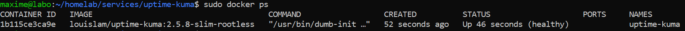

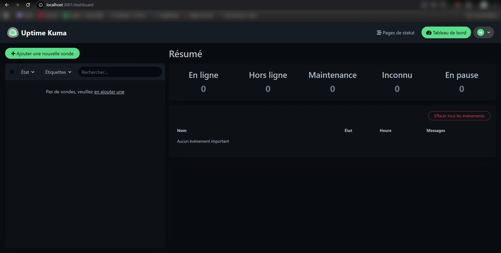

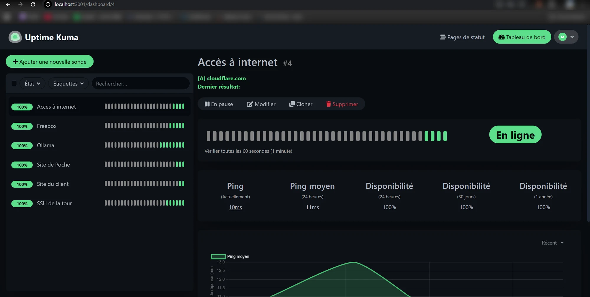

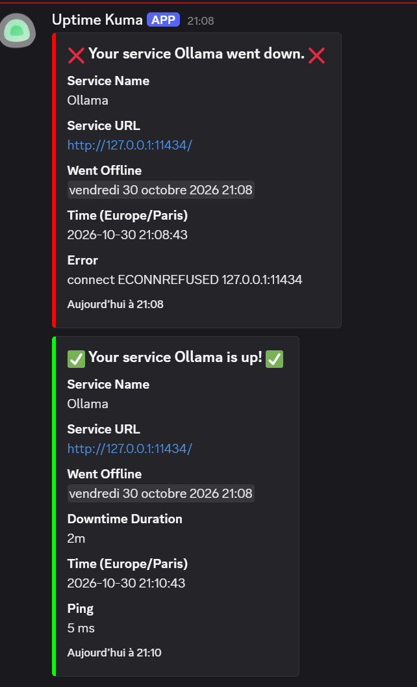

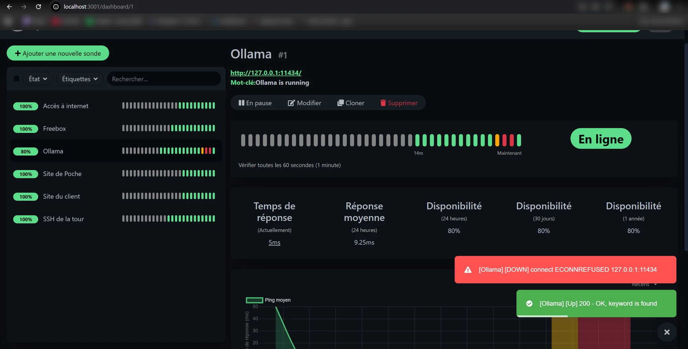

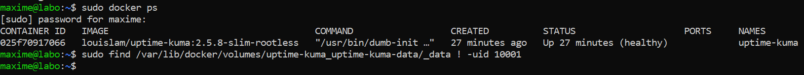

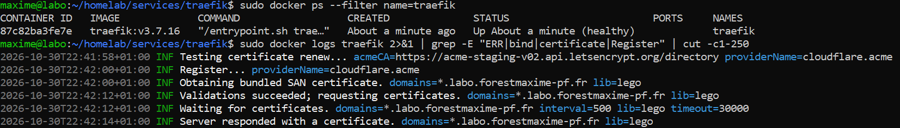

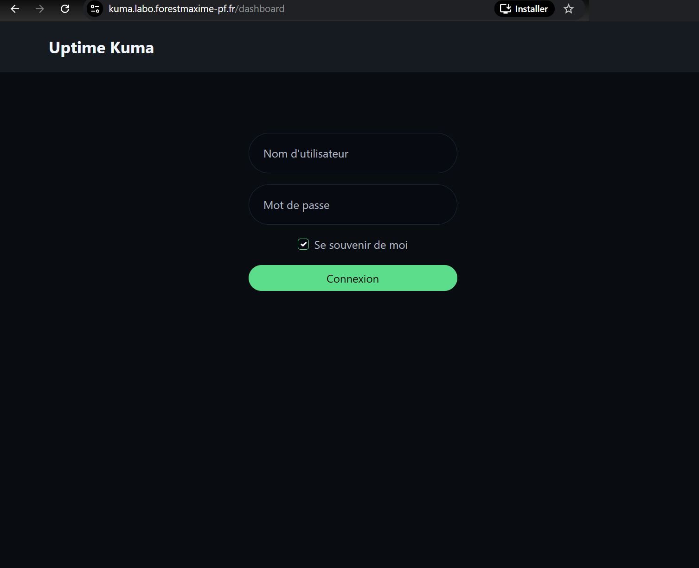

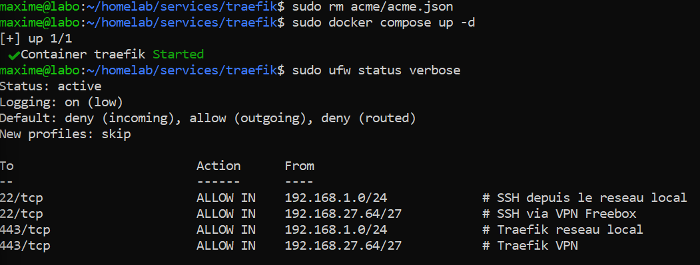

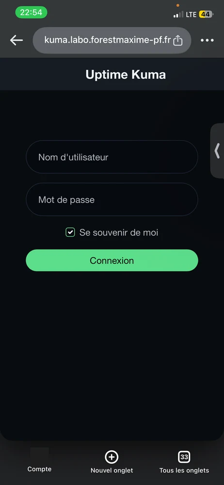

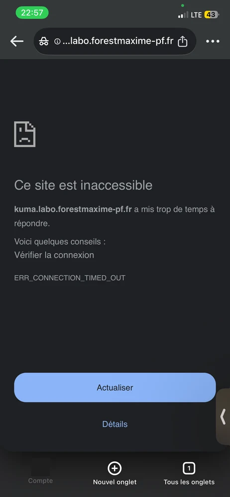

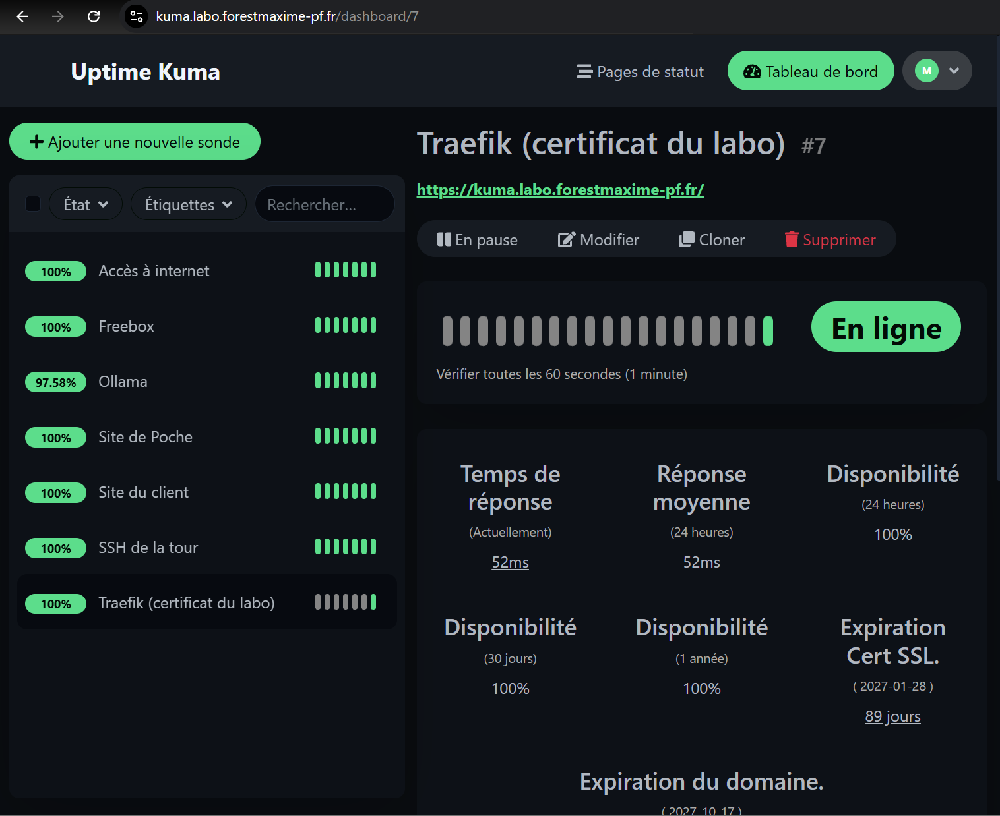
Captures du jeton (sans le jeton) et de l'enregistrement DNS :

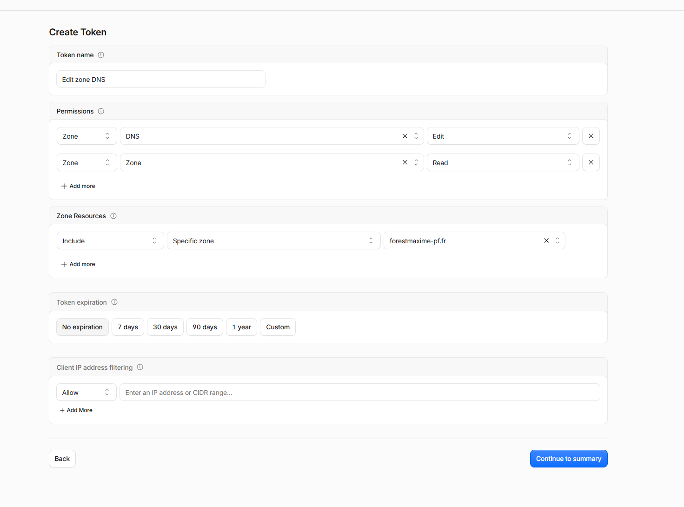

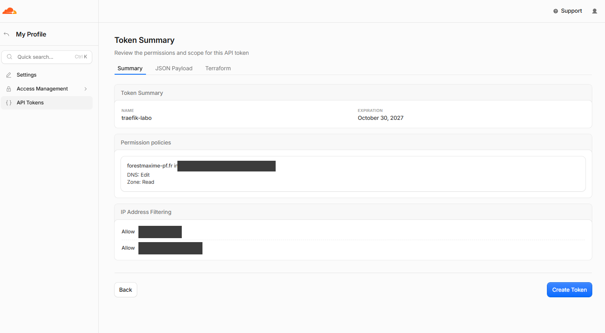

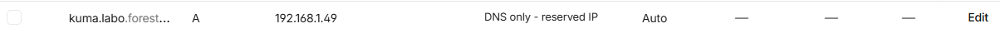
Ce qui n'a pas été essayé en vrai :
- le renouvellement du certificat (prévu vers le 29/12/2026, quand il restera 30 jours) ;
- l'alerte d'expiration de la sonde du certificat (elle n'arrivera qu'à 21 jours de l'expiration) ;
- l'accès au port 443 par l'IPv6 publique depuis l'extérieur : le refus est prouvé par la configuration d'ufw (refus par défaut, IPv6 activé, aucune règle IPv6 pour le 443), pas par un essai depuis internet.
06Problèmes rencontrés et solutions
| Problème | Cause | Solution |
|---|---|---|
| Kuma tournait avec l'UID de mon compte | L'image utilise l'UID 1000, qui est aussi celui de maxime sur la tour | Utilisateur 10001, qui n'existe pas sur la tour, et volume donné à cet utilisateur |
| Mon compte était dans le groupe lxd (trouvé pendant la relecture) | Mis par défaut par Ubuntu Server. Il équivaut à root sans mot de passe | Retiré du groupe, service lxd-installer.socket désactivé |
| La page du jeton Cloudflare fermée avant de le copier | Cloudflare ne montre un jeton qu'une fois | « Roll » : un nouveau jeton, mêmes droits, l'ancien ne marche plus |
| Le jeton tapé dans la commande et visible sur une capture | Mauvaise compréhension de la commande read -rs JETON | Capture effacée, historique vidé (history -c), vérifié absent des fichiers, puis jeton remplacé (« Roll ») : un jeton vu est un jeton grillé |
| listen tcp :443: bind: permission denied (Fig. 16) | Un conteneur non root ne peut pas utiliser les ports sous 1024, même avec le droit NET_BIND_SERVICE (Docker ne le transmet pas à un utilisateur non root) | Réglage de la tour net.ipv4.ip_unprivileged_port_start = 443 (rien n'écoutait entre 443 et 1023, SSH reste réservé à root). Traefik garde ainsi aucun droit système. Écartés : Traefik en root, ou une image à moi |
| Un premier essai « sans VPN » montrait encore la page | Le navigateur avait remontré la page gardée en mémoire | Refait dans un nouvel onglet privé : ERR_CONNECTION_TIMED_OUT |

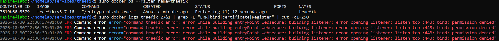
07Limites connues
- Kuma s'éteint avec la tour : il ne surveille que quand la tour est allumée, et ne peut pas signaler sa propre panne. La surveillance de mes clients 24 h/24 reste le Worker Cloudflare (étape 7).
- Le jeton peut détourner ce portfolio : « DNS : Edit » vaut pour toute la zone forestmaxime-pf.fr, y compris l'adresse du portfolio et l'enregistrement qui le relie à GitHub Pages. Cloudflare ne permet pas de limiter un jeton à quelques enregistrements. Ce qui réduit le risque : le jeton ne marche que depuis mon adresse, il expire le 30/10/2027, et il n'est lisible que par l'utilisateur de Traefik (et par root). Une zone à part, réservée au défi DNS (avec un CNAME _acme-challenge.labo vers elle), serait plus sûre, mais elle demande une autre zone DNS : un autre nom de domaine ou un service à part. Pas essayé.
- Le renouvellement du certificat demande la tour allumée : par défaut, Traefik renouvelle quand il reste moins de 30 jours. Il vérifie au démarrage (« Testing certificate renew » dans son journal) ; la fréquence de ses vérifications ensuite n'a pas été vérifiée. Il faut donc allumer la tour au moins une fois pendant ces 30 jours. La sonde de Kuma prévient à 21, 14 et 7 jours. Let's Encrypt raccourcit ses certificats : 64 jours à partir du 10/02/2027, puis 45 jours en 2028 (annonce sur letsencrypt.org) ; les renouvellements seront plus fréquents.
- Le domaine expire le 17/10/2027, avant le jeton : s'il n'est pas renouvelé, le portfolio et le labo tombent ensemble.
- Les routes de Traefik sont modifiables par mon compte (dynamique.yml, relu à chaque changement) : un compte maxime piraté pourrait ouvrir une route vers un autre service. Ce compte a déjà sudo, donc ce n'est pas un droit en plus, mais c'est une porte de plus.
- Le jeton expire le 30/10/2027 : à recréer avant, sinon le renouvellement échouera (la sonde le signalera).
- Le DNS public montre une adresse privée (192.168.1.49) : elle ne permet pas de joindre la tour depuis internet, mais elle donne un indice sur mon réseau. Choix assumé pour que le nom marche aussi sur l'iPhone par le VPN.
- Le port 443 est ouvert à tout le réseau local, donc aux autres appareils de la maison : Kuma garde son mot de passe.
- Le réglage du port 443 vaut pour toute la tour : un autre programme non root pourrait prendre le port si Traefik est arrêté. Risque faible sur une tour où je suis le seul utilisateur.
- Mises à jour à la main : les deux images ont une version fixée, à revoir chaque fin de mois.
08Ce que j'en retiens
- Docker peut contourner le pare-feu : un port publié par Docker passe par-dessus ufw. Mettre les conteneurs sur le réseau de la tour, sans port publié, laisse ufw décider.
- Un certificat sans ouvrir de port : le défi DNS permet un vrai cadenas sur un service qui n'est joignable que par le VPN.
- Limiter ce que peut faire un secret : une seule zone, une seule adresse d'origine, une date de fin, et un domaine sans e-mails. Reste que cette zone porte aussi mon portfolio (partie 7) : limiter un secret, ce n'est pas le rendre inoffensif. Et un secret vu sur une capture est un secret à remplacer.
- Essayer avant la mise en service : la config de Traefik a d'abord tourné sur le portable avec un faux jeton, puis sur le serveur de test de Let's Encrypt.
- Lire les droits réels d'un processus (/proc/…/status) plutôt que de croire le fichier de config : c'est ce qui a montré que Kuma tournait sous mon UID.